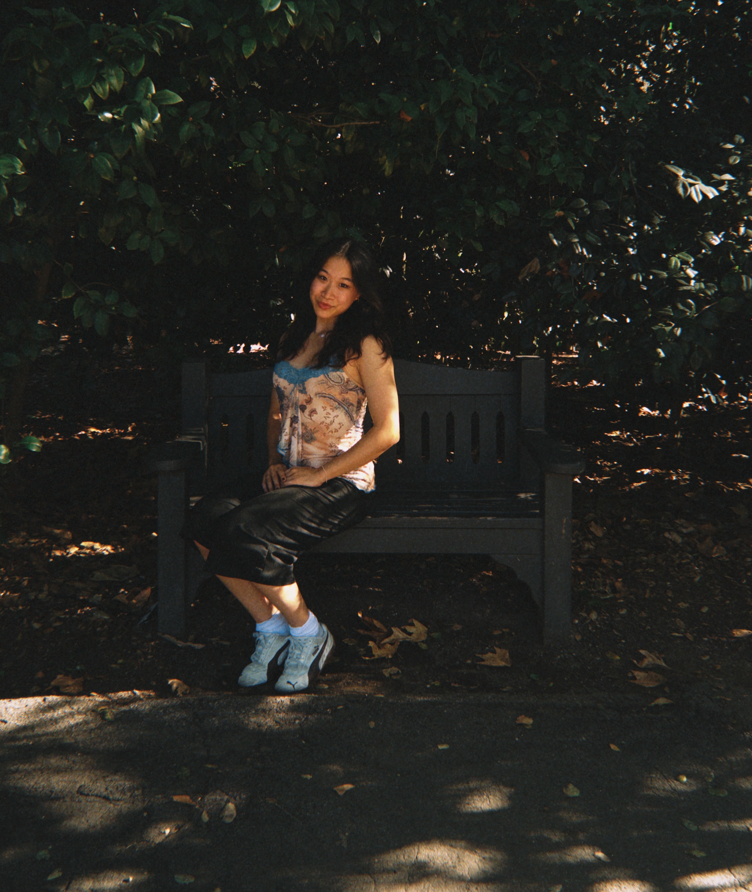

Time in Shanghai: --:--:--
Who am I?
Shanghai-born and raised. I’m currently pursuing a degree in Media Arts and Practice at the School of Cinematic Arts at USC.
I love making fun and cute things! I first got into design when I picked up a pen in Procreate and started desginging graphics for my school’s Varsity sports teams!
When I’m not sitting at my laptop tinkering on Photoshop, I’m listening to corny romance songs, lifting, or rock climbing.
